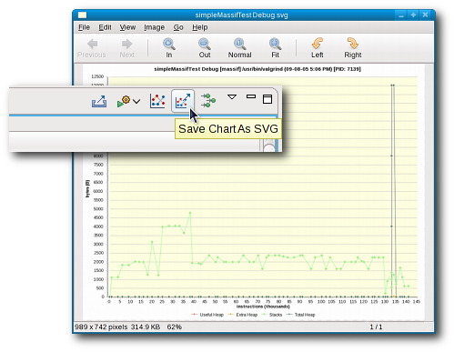
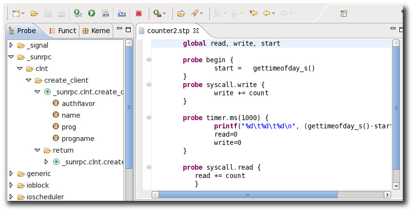

| Release |
Resolved |
Community Contributions |
0.6
23 June 2010 |
83
bugs |
Jon Beniston
contributed some patches for the Autotools plugins. Patrick Tasse
helped improve the TMF Time Analysis Viewer. Chris Aniszczyk clarified
some API violations. Martin Gerhardy helped Xavier Raynaud implement
support for 64-bit gmon files for use with the GProf integration
plugins. |
0.5.1
12 May 2010 |
8
bugs |
Thanks to bugs filed
by Jens Seidel and Chris Conway, Jeff Johnston fixed bugs in our
Autotools component. Jeff also fixed bugs in our ChangeLog and
libhover components and included the Autotools plugin documentation
which was mistakenly missed in 0.5.0. Roland Grunberg fixed some
OProfile bugs and committed a patch submitted by Lawrie Nichols in bug #296228. As well, our
OProfile native fragment dropped its erroneously-licensed opxml
binary; users will now need to rebuild on their system which will
actually fix a few bugs people were seeing. |
0.5
18 March 2010 |
70
bugs |
Niels Thykier and
Benjamin Drung provided many patches for eclipse-build and ran test
builds to verify fixes and improvements. Anithra contributed the
SystemTap dashboard and removed the SystemTap server dependency.
Thanks to Jens Seidel and Roland Grunberg who helped test & fix
SystemTap bugs. Jens also helped with testing our Autotools
integration. |
0.4.1
21 Dec. 2009 |
5
bugs |
This was a
bug-fix-only release, resolving some issues with Autotools and
OProfile plugins. |
0.4
23 Nov. 2009 |
101
bugs |
Our Eclipse SDK
build harness, eclipse-build, would be much worse off if it weren't
for the patches and testing by Benjamin Drung, Matthias Klose, Marvin
Schmidt, and Niels Thykier. Nick Boldt once again helped us with some
release engineering issues. Thanks to users such as Jens Seidel,
Andrew Gvozdev, and PurpleFloyd for reporting some key bugs against
Autotools and testing the subsequent fixes. |
0.3
19 August 2009 |
113
bugs |
Jens Seidel helped
with Autotools and Valgrind testing, filing important bugs. Alex
Mueller guided the development of the manual control of the OProfile
daemon. Nick Boldt once again helped us with our release engineering
processes. Martin Gerhardy and Mat Booth helped getting the RPM
specfile editor to work on Windows. Andrew Niefer and Kim Moir helped
a lot with getting eclipse-build off the ground and with difficult
problems. |
0.2.1
5 June 2009 |
1
bug |
Patrick Hofer and
others notified us of a bug with our Valgrind components on
Debian-based systems. |
0.2
11 May 2009 |
67
bugs |
Ed Swartz assisted
in tracking down a UI blocker in the configure.ac editor. Pedro
Saraiva pointed out a localization issue with the massif plugin. Uwe
Stieber fixed a compilation problem with Eclipse 3.5, fixed the
OProfile fragments, and illustrated an incorrect BREE. Jens Seidel and
Ben Konrath both filed bugs with good test cases and helped track down
problems. Uwe Stieber, Mikael Steen Springer, and Axel Mueller helped
Kent Sebastian to improve the privilege escalation code for launching
opxml on various Linux distributions. Nick Boldt helped improve our
automated build process. |
0.1
23 Jan. 2009 |
11
bugs |
Alphonse van Assche
contributed many fixes for our RPM specfile editor as well as
integration of rpmlint error and
warning parsing. Phil Muldoon contributed his Systemtap editor and helped with
ChangeLog bug fixes. Kent Sebastian picked up Keith Seitz's work on OProfile and worked with
Elliott Baron to create a framework for profiling tools. Elliott
contributed his work on integrating the Valgrind
suite of tools into the IDE. Alexander Kurtakov contributed many fixes
to our RPM specfile editor as well as making the initial RPM Stubby
work usable. Nick Boldt helped us immensely as we got our release
engineering processes straightened out. Jeff Johnston contributed his
work on integrating the GNU Autotools with the CDT. Jeff also
contributed his work on bridging the gap between API documentation and
the CDT's hover help with his libhover work. |
| pre-0.1 |
69
bugs |
Prior to our 0.1
release, Remy Chi Jian Suen helped us out with proper execution
environments for our plugins among other things. Phil Muldoon
contributed his ChangeLog plugin. Kyu Lee then contributed an editor
for ChangeLog files. Keith Seitz contributed his OProfile integration
plugins. Igor Foox helped out a great deal getting our RPM specfile
editor started. |
|
New SDK version
|
Eclipse-build has been updated to build the new
version of the Eclipse SDK 3.5.2.
|
|
|
System libraries
|
Eclipse-build has been extended to use system jars
for external dependencies instead of the jars shipped with SDK.
|
|
|
ECF
|
ECF build is part of the bootstrapping step now
allowing us to use the just built ecf instead of rebuilding them after
the SDK build.
|
|
|
Running SDK Tests
|
The Eclipse SDK test suites can be run with ant
runTests. A single HTML file with aggregated results will be created.
|
|
|
Enhance distributions' experience
|
Install target has been added to install
provisioned SDK.
|
|
|
Additional Architectures
|
Support for the following additional architectures
has been added:
arm
mips
mipsel
PA_RISC
alpha
ia64
ppc64
sparc
sparc64
|
|
|
Speed up build
|
Build has been changed to work with only one
target os-ws-arch.
|
|
|
Multi-threaded profiling
|
Callgraph can now trace function calls in
multi-threaded programs. No difference in terms of the user interface,
but now when graphing Callgraph will automatically track which
functions belong to which thread and display them accordingly.
 |
|
|
Convert To DOT Language
|
Eclipse Callgraph can now save graphs to the DOT
language. In Eclipse Callgraph, click the main menu and choose File ->
Save As, then choose an option to save parts of the graph or the whole
graph as a .dot file. Graphs in DOT language can then be graphed or
converted to other formats (e.g. PDF, PNG, etc.) by any of a large
number of existing DOT parsing programs.
 |
|
|
Visualize C/C++ Projects
|
Graphically displays the call hierarchy from
executing a C/C++ binary, along with various other runtime statistics.
 |
|
|
Link To Function Source
|
The graph views are linked to their source code.
This means that from any view, one can jump directly to the relevant
source code by holding Ctrl and double clicking a node.
 |
|
|
Valgrind 3.5 Support
|
Valgrind 3.5 brings several changes
to the tool suite, such as improved leak checking. For the Linux Tools
0.4 release, an issue has been corrected that prevented launching a
program successfully with default Valgrind options. Valgrind 3.5 users
should now have no problems profiling their C/C++ applications in
Eclipse.
|
|
|
Customize Valgrind Location
|
A new preference setting specifies an alternate
location for the Valgrind executable. Now you can use Valgrind from a
non-standard location without having to manipulate your PATH
environment variable! By default this will be set to the path returned
by the which command. The preference page can be found in Window
-> Preferences .
 |
|
|
Suppression File Editor
|
For Valgrind tools that output a series of errors,
there can often be a lot of noise — errors you are not
interested in. Valgrind has the capability of using Suppressions to
ignore such errors. The syntax for defining Suppression Files can be
found here.
Now an editor for Valgrind Suppression files has
been created and will be used for files ending with the ".supp"
extension. It features context-sensitive syntax highlighting (for
instance only highlighting the word "Memcheck" when used to define the
tool relating to the Suppression), code folding and completion.
Completion is very useful to select from the full range of Memcheck
Suppression types.
Currently only Memcheck is supported in the editor
as it is the only tool of these plugins that uses Suppressions.
 |
|
|
Export Massif Chart
|
The allocation chart produced by the Massif plugin
can now be exported as an SVG.
 |
|
|
SystemTap Dashboard
|
The Dashboard Perspective is the most advanced
part of SystemTap GUI. It is designed to allow users to browse and run
prebuilt modules in order to see multiple graphs updating in
sequence.The dashboard allows for visualizing specific system
activities graphically.

SystemTap dashboard
|
|
|
Removed server dependency
|
The SystemTap GUI server is now redundant.
SystemTap scripts can be executed remotely using remote ssh.
|
|
|
SystemTap IDE
|
Linux Tools encompasses a fully-featured IDE for
the SystemTap language. This includes a SystemTap editor and views
that list available systemtap probes, systemtap functions and the
kernel source code. Code completion, context-assistance and
highlighting are all included in the IDE.
 |
|
|
SystemTap Graphs
|
The SystemTap IDE is can display the output of
SystemTap scripts as dynamic graphs. Graphs are created on-the-fly and
according to user specifications.
 |
|